ggplot2 is an extension of the tidyverse that enables the generation of charts with a consistent and powerful syntax. It requires learning an additional ‘mini-language’ but allows for the efficient construction of complex graphs.
18.1 Library
Here, we simply load the various packages that will allow us to manipulate data tables and create figures:
tidyverse is a package that contains several packages designed for data manipulation in R (stringr, dplyr, ggplot2)
ggplot2 which allows you to create complex graphics and observing data with visuals
In ggplot2, a geom (short for “geometric object”) is a layer that defines how data points are visually represented in a plot. Each type of plot, such as points, lines, bars, etc., is created using a specific geom function. Here are some common examples:
geom_point(): for scatter plots.
geom_bar(): for bar charts.
geom_histogram(): for histograms.
geom_boxplot(): for box plots.
These functions are added to a basic ggplot object using the + operator.
Example of code :
ggplot() +
geom_…………(data, aes(x = x, y = y, fill = color)) +
labs(title = “title”, x = “abs”, y = “ord”) +
theme_bw()
library(ggplot2)library(agridat) # oats datalibrary(questionr) # insee datalibrary(dplyr) #> #> Attaching package: 'dplyr'#> The following objects are masked from 'package:stats':#> #> filter, lag#> The following objects are masked from 'package:base':#> #> intersect, setdiff, setequal, unionlibrary(RColorBrewer)library(readr) library(viridis)#> Loading required package: viridisLitelibrary(tidyr)display.brewer.all()
18.2 Data
We will present different code examples with 2 datasets to show that the methods are applicable to all datasets. Therefore, it is important to save our codes properly so that we can copy them for other data. Here are the two datasets :
The table below comes from the library ‘agridat’ shows the grain yield with 3 types of species. The ‘yield’ column represents the yield in quarter-pounds (lbs), and the ‘grain’ column represents the yield in pounds (lbs), (1lbs = 453 g). You can display the first lines of the table using the head() function.
Oat yield (grain, straw)
Nitrogen dose
Genotype (variety)
Blocks defined for experimentation
The file ‘rp2018’ contains, for all the municipalities in France in 2018, the following variables.
Here, we indicate to R that we want to plot a scatterplot, so we need to specify a “x” and “y” for our graph. Here the example of the basic R plot, and the ggplot plot.
ggplot() +geom_point(data = yates.oats, aes(x = grain, y = straw))
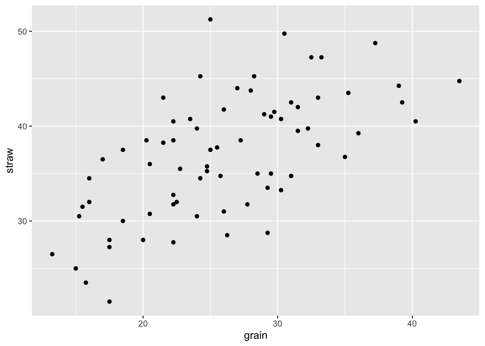
18.4 Histogram
Usually, when you’re interested in a variable, you look at its distribution. First, a classic basic histogram: you specify the data table in the ggplot() function, and the components of the table that will be used to create the plot in the aes() function. For example, we need to specify which column of the table will be represented on the x-axis, on the y-axis, or which column will allow us to color certain elements or modify the shape of the points, for instance. We then add successive layers to the graph using the + sign to achieve the desired rendering.
Here, we indicate to R that we want to plot a histogram, so we don’t need to specify a “y” for our graph:
ggplot(yates.oats, aes(x = grain)) +geom_histogram()#> `stat_bin()` using `bins = 30`. Pick better value with `binwidth`.
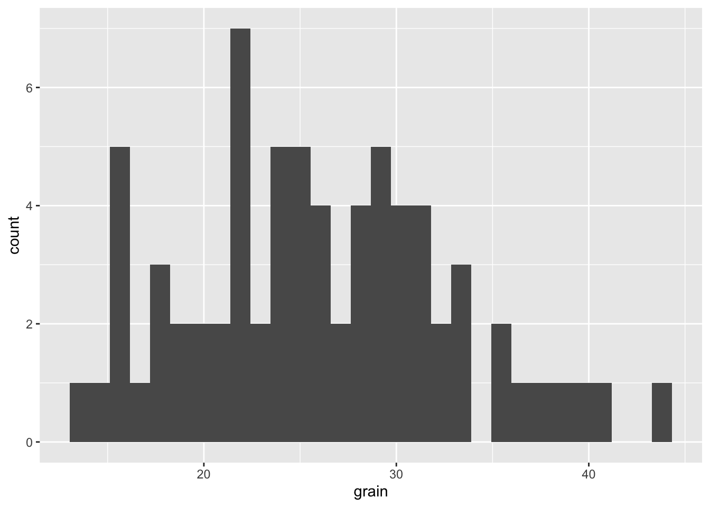
The problem is that the figure is quite unattractive, isn’t it? So, we will modify it with options: fill for the bar fill, color for the border, and alpha for transparency. The theme allows us to change the overall appearance of the figure. Here you can see all theme : https://ggplot2.tidyverse.org/reference/ggtheme.html
Below, geom_histogram() is used to plot a histogram.
We can also modify the number of classes represented by the histogram with the bins option.
To modify the size of the classes represented by the histogram, we use the binwidth option.
Try both codes below:
ggplot(yates.oats, aes(x = grain)) +geom_histogram(fill ="lightblue",color ="black",bins =10, # bar numbers (number of classes)alpha =0.5) +labs(title ="Grain yield", x ="Grain (lbs)", y ="Count") +theme_bw()
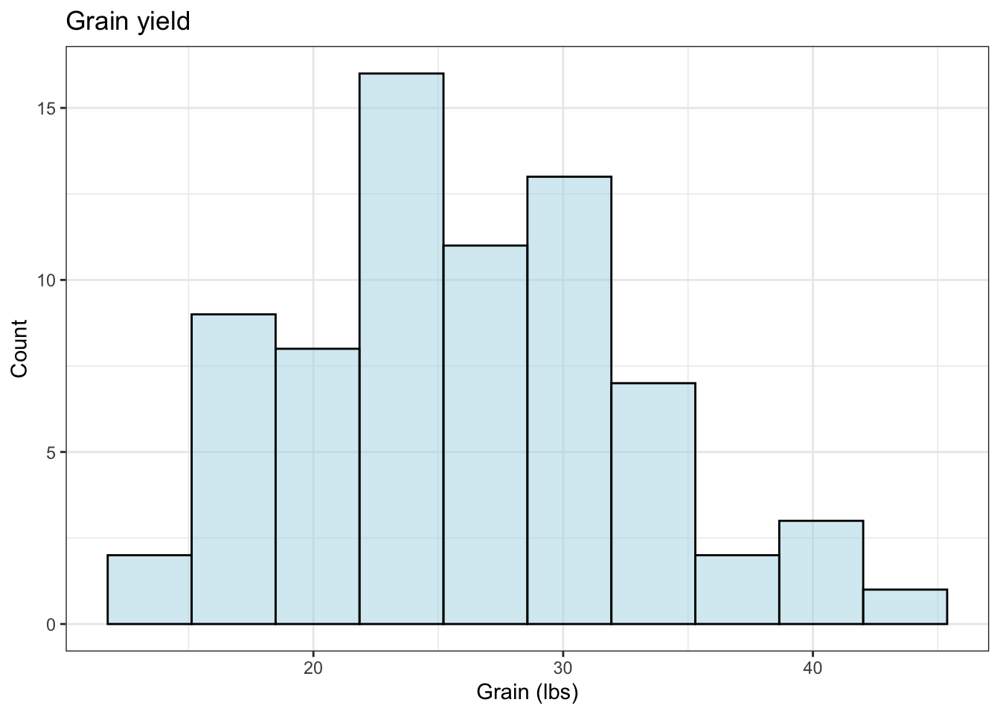
ggplot(rp2018, aes(x = etud)) +geom_histogram(fill ="red",color ="black",binwidth =5, # reduce or increase the width of the bar (number of classes)alpha =0.5) +labs(title ="Student proportion in France per municipalities", x ="Student (%)", y ="Count") +theme_bw()
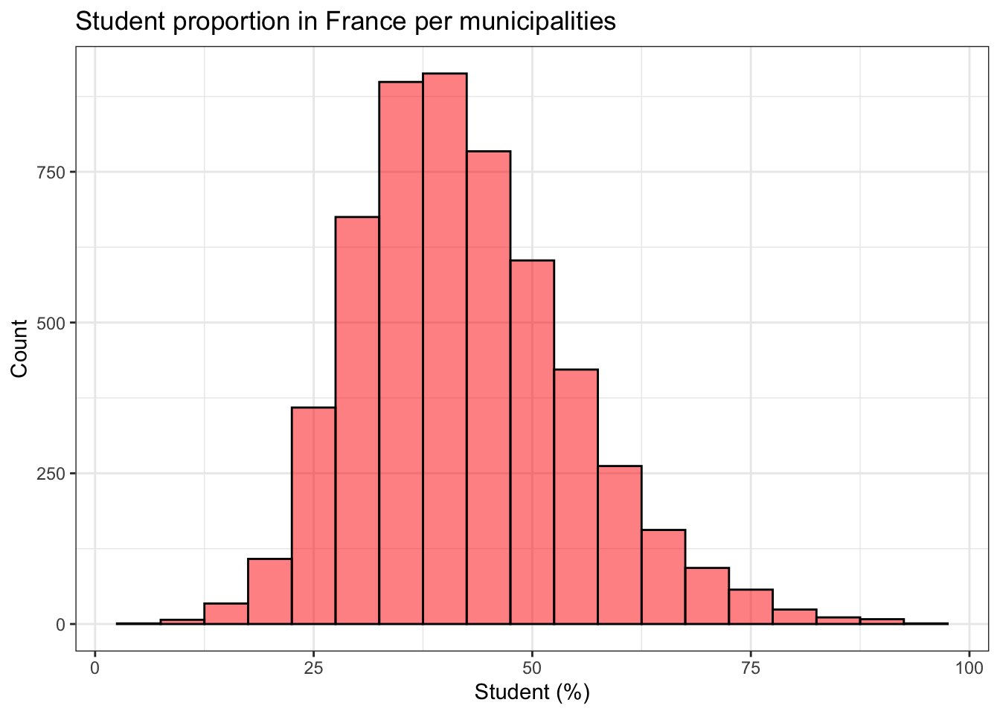
18.5 Density
geom_density() is used to plot the density curve.
ggplot(yates.oats, aes(x = grain)) +geom_density(fill ="lightblue",color ="black",alpha =0.5) +labs(title ="Grain yield", x ="lbs", y ="Count") +theme_bw()
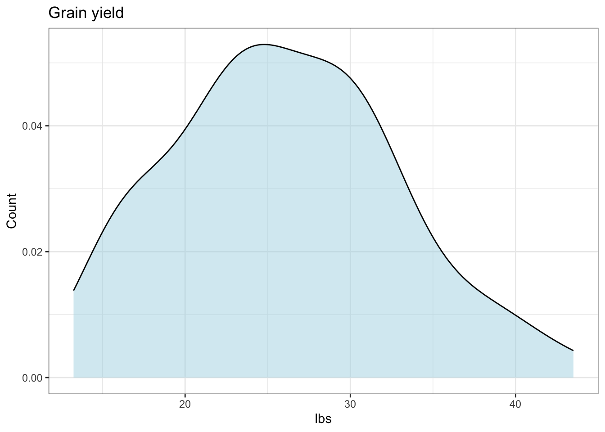
ggplot(rp2018, aes(x = etud)) +geom_density(fill ="red",color ="black",alpha =0.5) +labs(title ="Student proportion in France per municipalities", x ="Student (%)", y ="Count") +theme_bw()
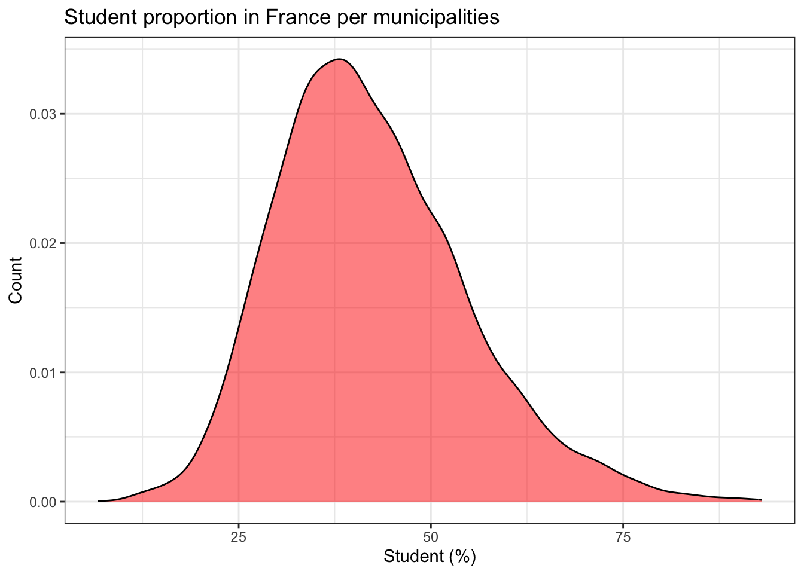
18.6 QQplot
A QQ plot indicates a normal distribution when the points closely follow a straight line, suggesting that the quantiles of the data match the quantiles of a normal distribution. Here is a good QQ-plot reference : https://www.tjmahr.com/quantile-quantile-plots-from-scratch/
Let’s look at the yields in the form of boxplots for each variety. To do this, we use the geom_boxplot() function. Please note that the color of boxplots and barplots is managed not with color but with fill (points and lines are managed with ‘color’). Other palettes are available at the following address: https://bookdown.org/rdpeng/exdata/plotting-and-color-in-r.html
ggplot(yates.oats, aes(x = gen, y = grain, fill = gen)) +geom_boxplot() +labs(title ="Grain yield", x ="Genotype", y ="Yield (lbs)") +scale_fill_brewer(palette ="Set1") +# colortheme_bw()
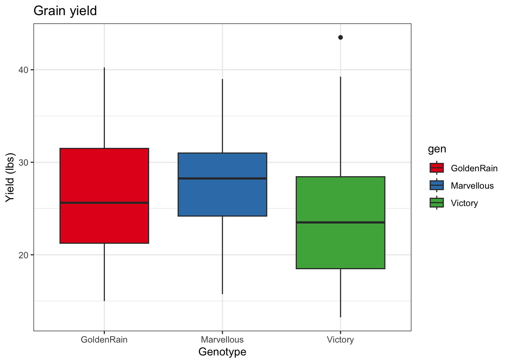
ggplot(data = rp2018, aes(x = code_region, y = etud, fill = region)) +geom_boxplot() +labs(title ="Proportion of cadre per region", x ="Region", y ="Student(%)", fill ="Region") +scale_fill_brewer(palette ="Set1") +# colortheme_bw() #> Warning in RColorBrewer::brewer.pal(n, pal): n too large, allowed maximum for palette Set1 is 9#> Returning the palette you asked for with that many colors
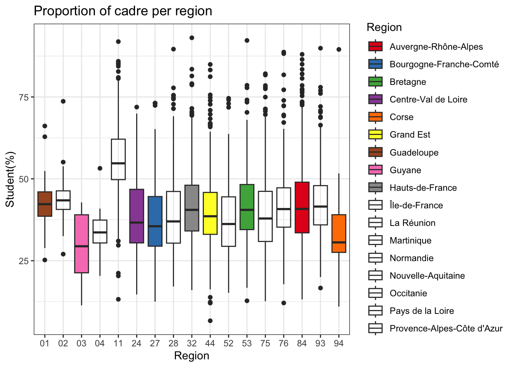
The colorRampPalette() function in manner similar to colorRamp((), however the function that it returns gives you a fixed number of colors that interpolate the palette. Again we have a function pal() that was returned by colorRampPalette(), this time interpolating a palette containing the colors red and yellow. But now, the pal() function takes an integer argument specifing the number of interpolated colors to return.
ggplot(yates.oats, aes(x = gen, y = grain, fill = gen)) +geom_boxplot() +labs(title ="Grain yield", x ="Genotype", y ="Yield (lbs)") +scale_fill_manual(values =c("black", "red", "yellow"),limits =c("GoldenRain", "Marvellous", "Victory")) +# colortheme_bw()
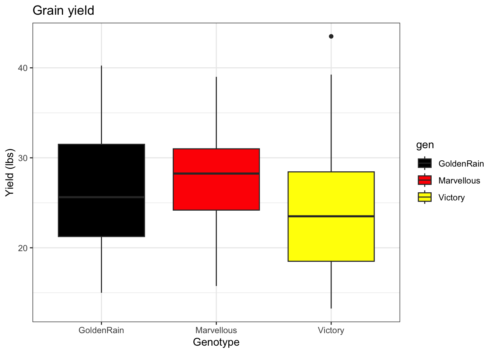
pal1 <-colorRampPalette(c("lightblue", "purple", "red", "green"))pal2 <-colorRampPalette(brewer.pal(9, "Set1")) # 9 to use all colorslibrary(legocolors)#> Warning: package 'legocolors' was built under R version 4.4.1pal3 <-colorRampPalette(legoCols$hex[2:13])# length(rp2018$code_region)# length(unique(rp2018$code_region))ggplot(data = rp2018, aes(x = code_region, y = etud, fill = region)) +geom_boxplot() +labs(title ="Proportion of cadre per region", x ="Region", y ="Student(%)", fill ="Region") +scale_fill_manual(values =pal3(17)) +# you can change the pal() here (see above)theme_bw()
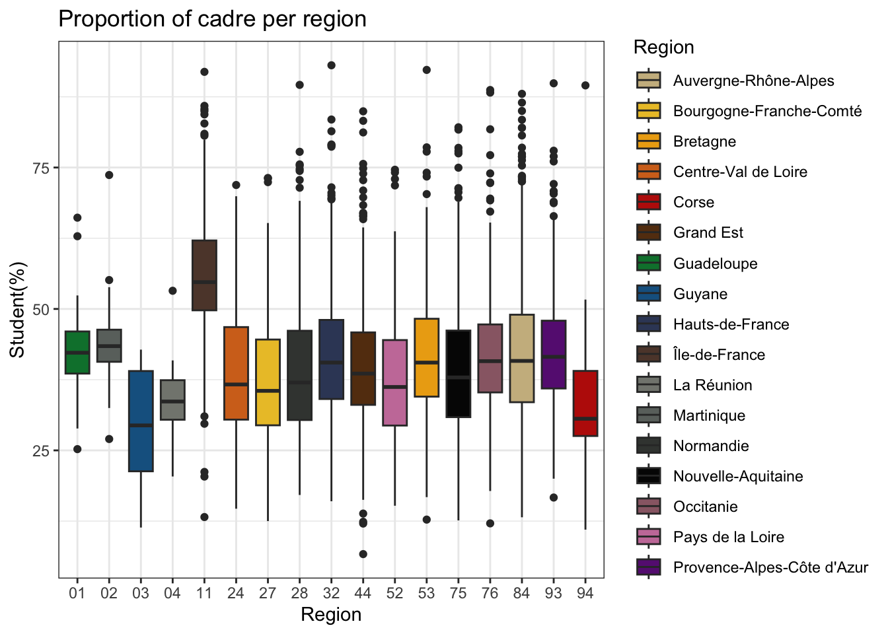
18.8 Boxplot with point
To display points on a boxplot, you can use the geom_jitter() function, which displays the points by offsetting them from each other to avoid overlap. When displaying the points, you should add the 'outlier.shape = NA' option in the geom_boxplot()function to prevent displaying the same points twice.
ggplot(yates.oats, aes(x = gen, y = grain, fill = gen)) +geom_boxplot(outlier.shape =NA) +#exclude point outliergeom_jitter(width =0.1, color ="black") +# jitter allows to arrange the place of the point comparaing to the geom_pointlabs(title ="Grain yield", x ="Genotype", y ="Yield (lbs)") +scale_fill_brewer(palette ="Set1") +theme_bw()
18.9 Multi-boxplot
We could also put the blocks in x, and color according to the varieties. Or conversely, the varieties on the x-axis and the blocks in color.
ggplot(yates.oats, aes(x = block, y = grain, fill = gen)) +geom_boxplot() +labs(title ="Grain yield", x ="Blocks", y ="Yield (lbs)") +scale_fill_brewer(palette ="Set1") +theme_bw()
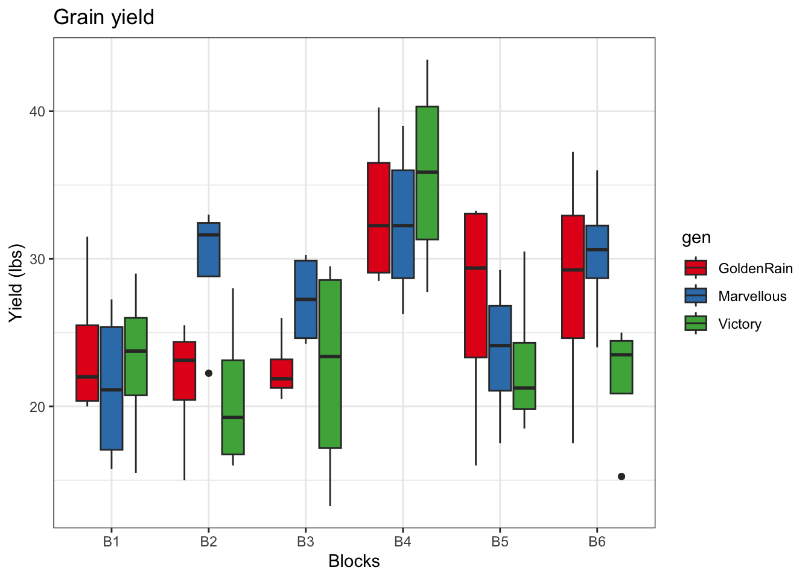
ggplot(yates.oats, aes(x = gen, y = grain, fill = block)) +geom_boxplot() +labs(title ="Grain yield", x ="Blocks", y ="Yield (lbs)") +scale_fill_brewer(palette ="Dark2") +theme_bw()
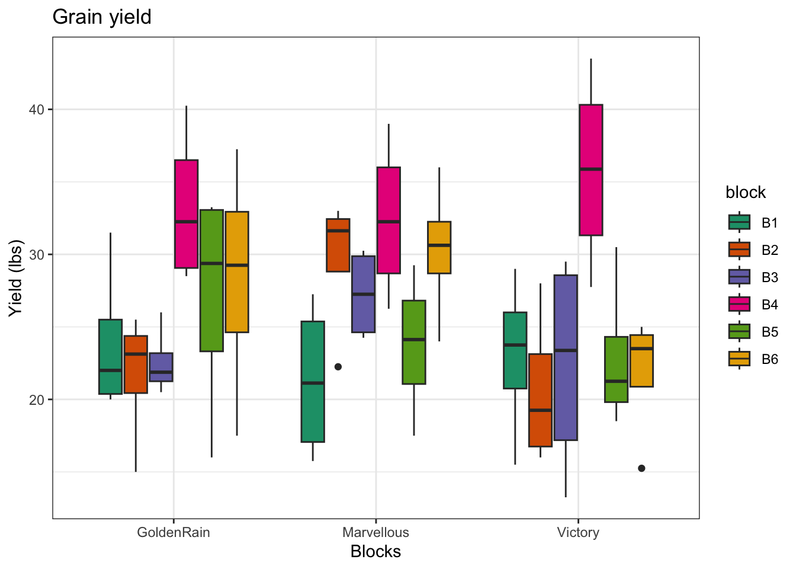
For the ‘rp2018’ data, we can create categories based on regions or departments; however, this still results in a large number. In the example below, I still made the boxplot graph but removed the legend. This is an example of data observation to see a marked trend at first glance, but it is rarely used for reports.
ggplot(rp2018, aes(x = code_region, y = etud, fill = code_departement)) +geom_boxplot(outlier.shape =NA) +labs(title ="Department in the region", x ="Region", y ="Student(%)") +theme_bw() +theme(legend.position ="none")
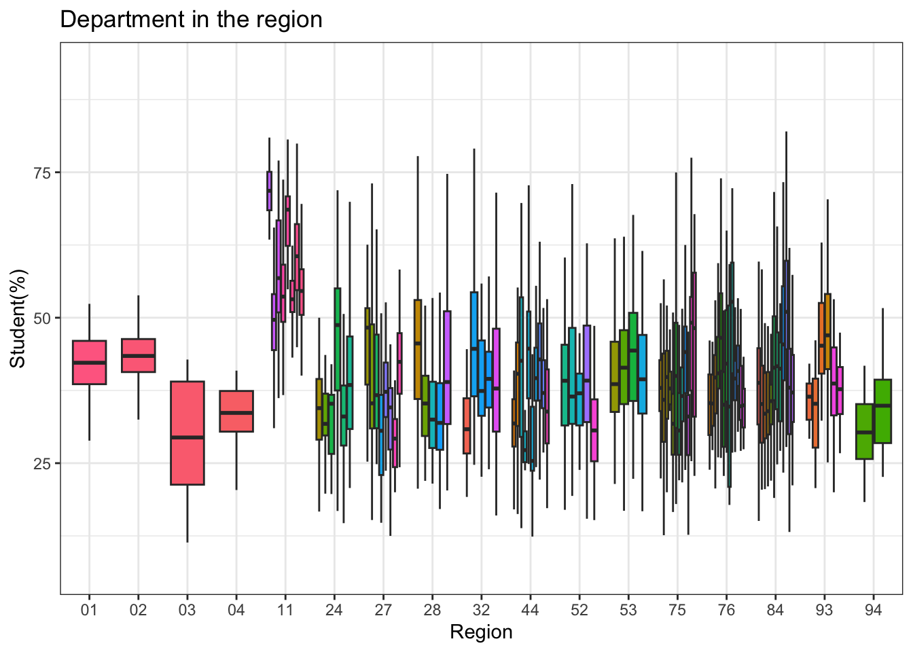
# 44 Grand-Est, 76 Occitanie, 53 Bretagne, 28 Normandierp2018_reg44 <- rp2018[rp2018$code_region =="44",]g44 <-ggplot(rp2018_reg44, aes(x = code_departement, y = etud, fill = code_departement)) +geom_boxplot() +labs(title ="Grand Est", x ="Department", y ="Student(%)") +theme_bw() +theme(legend.position ="none")rp2018_reg76 <- rp2018[rp2018$code_region =="76",]g76 <-ggplot(rp2018_reg76, aes(x = code_departement, y = etud, fill = code_departement)) +geom_boxplot() +labs(title ="Occitanie", x ="Department", y ="Student(%)") +theme_bw() +theme(legend.position ="none")rp2018_reg53 <- rp2018[rp2018$code_region =="53",]g53 <-ggplot(rp2018_reg53, aes(x = code_departement, y = etud, fill = code_departement)) +geom_boxplot() +labs(title ="Bretagne", x ="Department", y ="Student(%)") +theme_bw() +theme(legend.position ="none")rp2018_reg28 <- rp2018[rp2018$code_region =="28",]g28 <-ggplot(rp2018_reg28, aes(x = code_departement, y = etud, fill = code_departement)) +geom_boxplot() +labs(title ="Normandie", x ="Department", y ="Student(%)") +theme_bw() +theme(legend.position ="none")library(gridExtra)#> #> Attaching package: 'gridExtra'#> The following object is masked from 'package:dplyr':#> #> combinegrid.arrange(g44, g76, g53, g28,nrow =2, ncol =2)
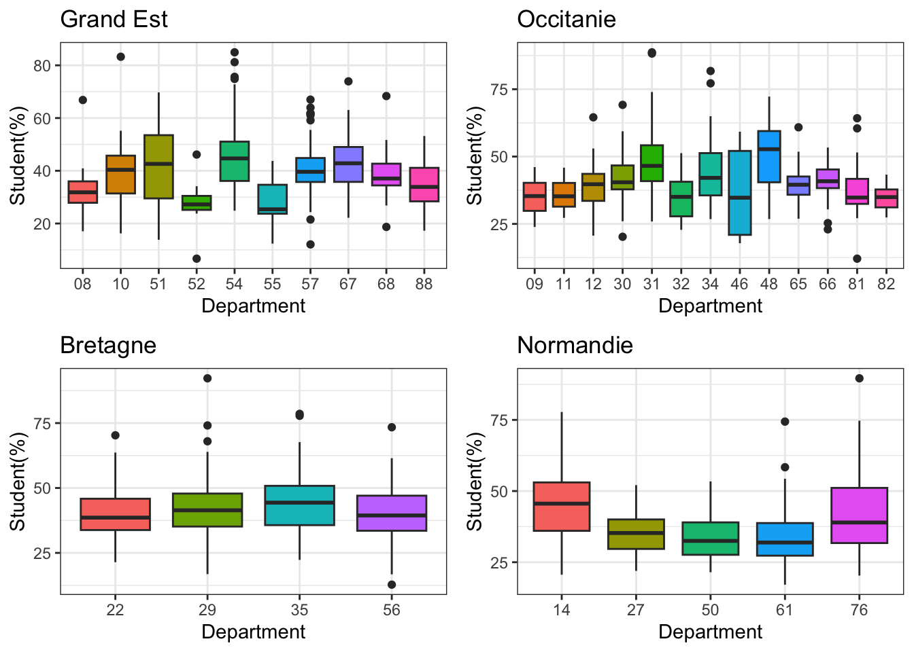
18.10 Violinplot
One last one, the violin plot, which shows us the distribution curve. We use the geom_violin() function for this. On it, we could display the mean and the standard deviation, for example. For this, we use the stat_summary() function, in which we specify the function used (fun.data), the number of standard deviations represented by the error bars (fun.args), the geometry of the representation (geom), and the color, of course.
ggplot(yates.oats, aes(x = gen, y = grain, fill = gen)) +geom_violin() +geom_jitter(width = .1) +stat_summary(fun.data ="mean_sdl", # mean representation + standard deviationfun.args =list(mult =1), # number of standard deviationgeom ="pointrange", # geometry color ="grey") +labs(title ="Grain yield", x ="Genotype", y ="Yield (lbs)") +scale_fill_brewer(palette ="Set1") +theme_bw()
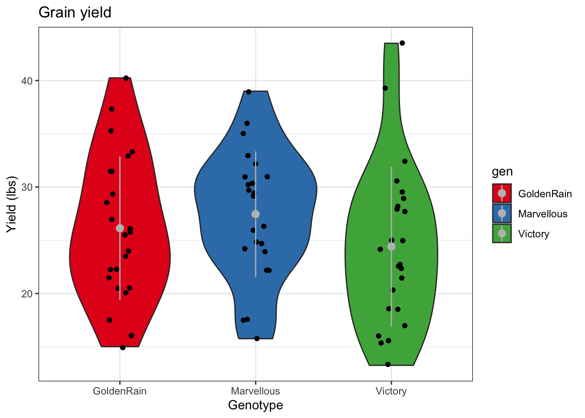
18.11 Scatterplot
We can also create a scatterplot (a graph with points) between straw yield and grain yield, or etud and cadres for example. The geom_point() option allows us to display points (with continuous data, for instance).
The scale_color_gradient() here allows us to directly detect the numerical values of the variables and produce a continuous color palette for data visualization. This allows us to integrate another variable on the points of the graph, and we can also apply it to the size to compare the x-axis and y-axis of the data to find the effect of other variables. For example, we can see that the higher the proportion of students, the more apartment rentals we observe. The scale_color_gradientn()here allows to
ggplot(yates.oats, aes(x = straw, y = grain, color = yield)) +# the color is set with 'color' geom_point() +scale_color_gradient("yield", low ="white", high ="blue") +theme_classic()
ggplot(rp2018, aes(x = etud, y = cadres, color = locataire, size = pop_tot)) +geom_point() +scale_color_gradient("locataire", low ="white", high ="blue") +theme_classic()
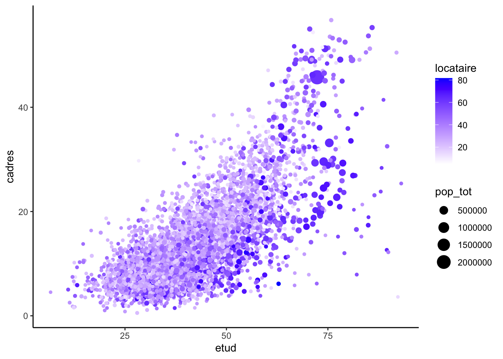
18.12 Scatterplot and regression line
We can also try to put the color of the points according to the variable (to color points, use color), and we add regression lines with the geom_smooth() for each genotype, also for the students and the cadres. The scale_color_brewer() function defines the color palette to color the points.
ggplot(yates.oats, aes(x = straw, y = grain, color = gen)) +geom_point(shape =1) +# ajust the size and choose the shapegeom_smooth(method ="lm", se = F) +#regression linescale_fill_viridis() +# ajust a linear color with numerics valuestheme_bw() +labs(title ="Grain vs Straw", x ="Straw yield (lbs)", y ="Grain yield (lbs)")#> `geom_smooth()` using formula = 'y ~ x'
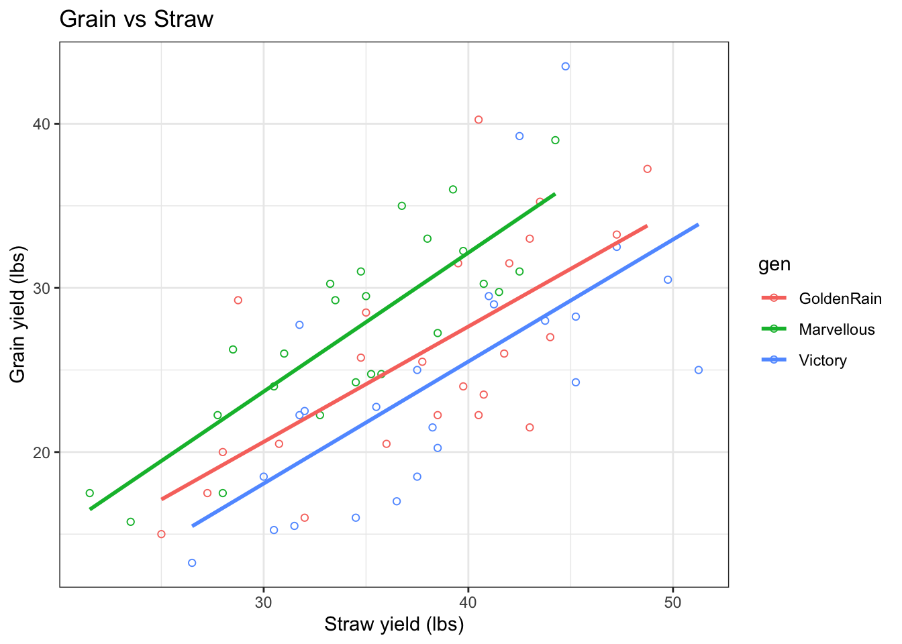
ggplot(rp2018, aes(x = etud, y = cadres, color = locataire)) +geom_point() +geom_smooth(method ="lm", se = F) +scale_color_gradient("locataire", low ="white", high ="blue") +theme_classic()#> `geom_smooth()` using formula = 'y ~ x'#> Warning: The following aesthetics were dropped during statistical transformation:#> colour.#> ℹ This can happen when ggplot fails to infer the correct grouping structure in#> the data.#> ℹ Did you forget to specify a `group` aesthetic or to convert a numerical#> variable into a factor?
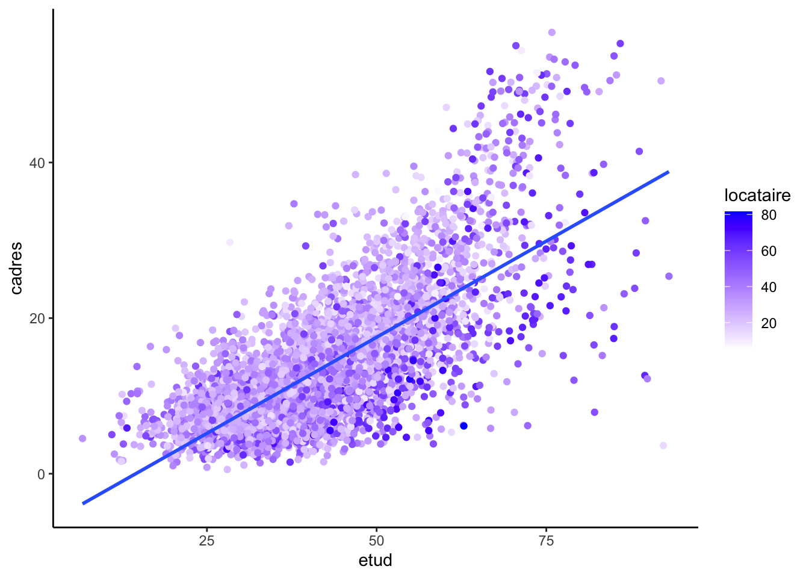
18.13 Barplot
Here’s a quick example to understand the proportion of forest area in each canton of Luxembourg:
For instance, you can create a bar chart where the x-axis represents the cantons and the y-axis represents the proportion of forest area. Using a function like geom_bar() to create a barplot.
To specify that we want the height of the barplot to represent the value indicated in our data frame, we need to add stat = "identity in the geom_bar() function. Normally, geom_bar() counts the number of cases at each x position (as an histogram), but with stat = "identity", it uses the values in the data directly. The ‘width’ option allows you to adjust the width of the barplot.
forest_area <-read.csv2("data/statec/forest_area_canton.csv", sep =",") ggplot(forest_area, aes(x = GEO..Géographie, y = OBS_VALUE, fill = GEO..Géographie )) +geom_bar(stat ="identity",width =0.5) +# width of the bartheme_bw() +labs(title ="Area of the afforestation rate", x ="Cantons", y ="Afforestation rate") +scale_fill_manual(values =pal2(17)) +theme(legend.position ="none")
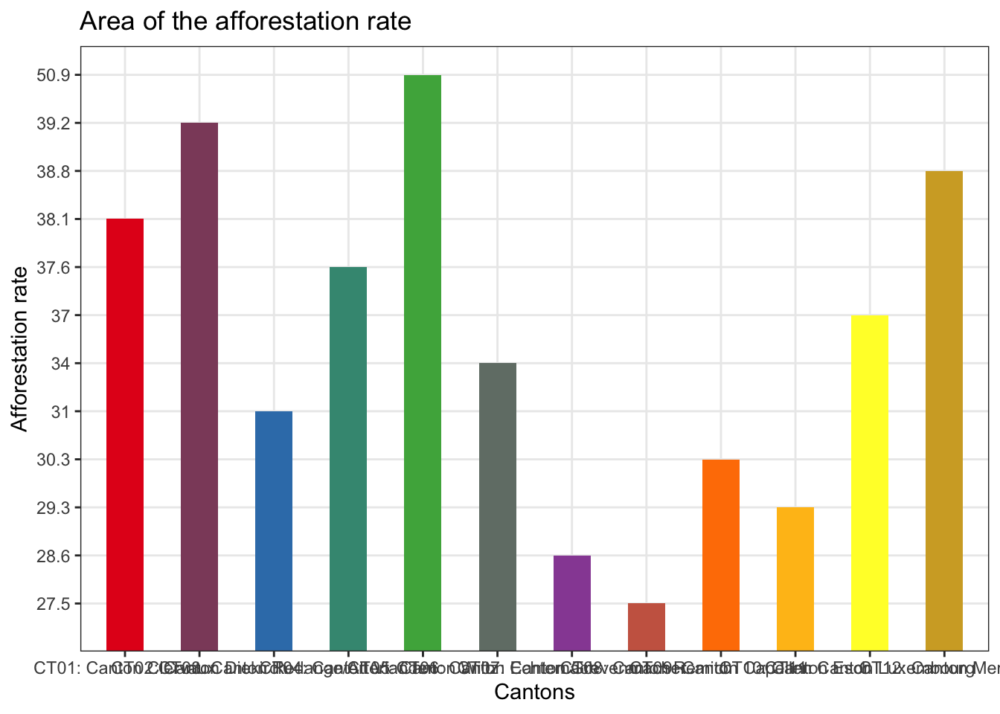
ggplot(forest_area, aes(x = GEO..Géographie, y = OBS_VALUE, fill = GEO..Géographie )) +geom_bar(stat ="identity",width =0.5) +# width of the bartheme_bw() +labs(title ="Area of the afforestation rate", x ="Cantons", y ="Afforestation rate") +scale_fill_manual(values =pal2(17)) +theme(legend.position ="none") +coord_flip() # allow to keep the real name of the canton